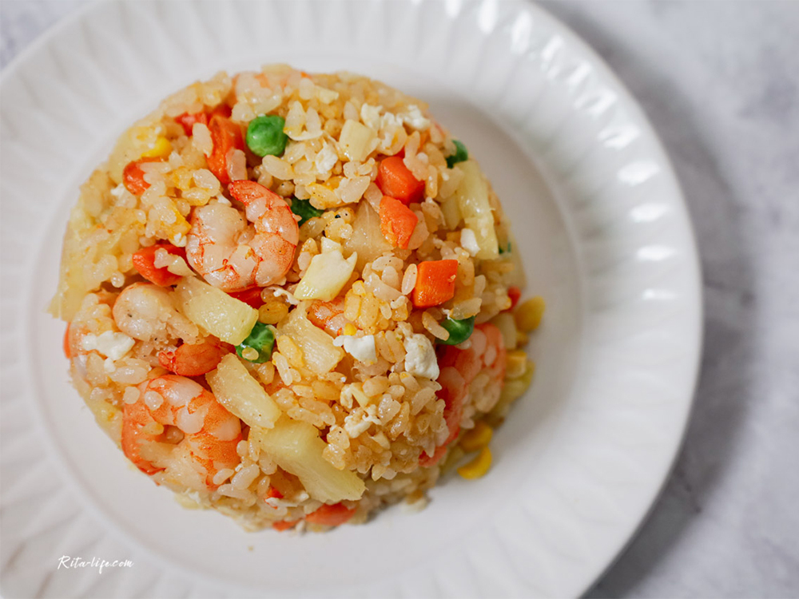

入鍋炒至7分熟起鍋備用
打2顆蛋取出蛋黃放入白飯裡，將白飯與蛋液拌勻，順便抓鬆白飯，每一粒米都要沾附蛋液這樣炒起來才粒粒分明
將兩顆蛋白與一顆全蛋下鍋炒熟後放入飯，再加入鹽巴與醬油調味，這時候火侯要大動作要快
飯炒鬆炒香後放入鳳梨與蝦仁炒到全熟，最後加上香菜即可

首頁 鮭魚番茄蛋炒飯介紹 鮭魚茶泡飯介紹 麻油什錦菇蓋飯介紹
製作影片
Your browser does not support the video tag.